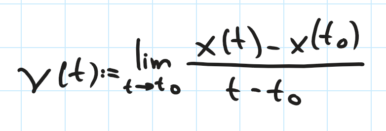
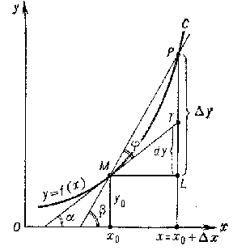

Il calcolo differenziale è uno degli argomenti più notevoli dell'Analisi Matematica, che ritrova svariate applicazioni concrete, tra cui l'ambito dell'ottimizzazione libera e analisi numerica (vedere il collegamento col metodo di Newton-Raphson!)
Per riassumere, si può dire che essi studiano le quantità variabili focalizzandoci sulla loro "velocità" di cambiamento e sulla somma infinite di quantità infinitesime per approssimare derivate e integrali.
Ci troviamo nella seconda metà del XVII secolo, un periodo caratterizzato dagli straordinari contributi di due giganti della matematica: Isaac Newton e Gottfried Wilhelm Leibniz. Questi due luminari sono diventati figure fondamentali nello sviluppo del calcolo differenziale, introducendo concetti rivoluzionari come la derivata.
Da un punto di vista storico, si dibatte ancora su chi sia il vero "inventore" del calcolo differenziale; alcuni, tra cui la Royal Society sostiene che Newton abbia concettualizzato il calcolo differenziale con significati fisici e geometrici, dall'altro lato si ha che Leibniz sostiene di aver introdotto una notazione sistematica per il calcolo differenziale dando un significato rigoroso e preciso.

Focalizziamoci sulla concettualizzazione della derivata secondo Newton. Già a 21 anni, ha delineato la concettualizzazione della velocità, in termini di derivata di una funzione.
Ovvero, da un punto di vista fisico si definisce la velocità nella seguente formula:
Dove x(t) indica la legge oraria del corpo.
Concettualmente, stiamo approssimando la pendenza della retta tangente della funzione x(t):
